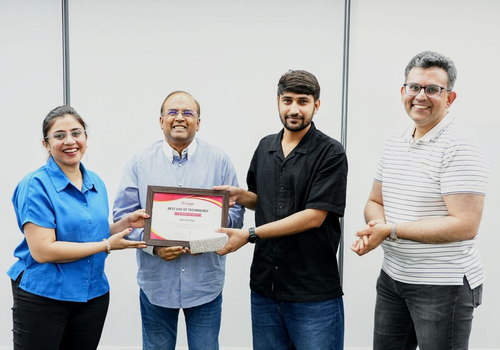

REQUESTBOUNDARYRESPONSE
Make boundaries clear
Explicit APIs, predictable validation, and services with well-defined responsibilities.
I turn complex workflows into
I’m Rahul. I build secure integrations, event-driven services, and backend systems that make products feel effortless on the surface.
A great product hides complexity without hiding the thinking behind it. I care about clear API contracts, secure trust boundaries, resilient integrations, and business logic other engineers can actually maintain.
↳ Less magic. More clarity. Better systems.
Explicit APIs, predictable validation, and services with well-defined responsibilities.
Handle external-system failures, event processing edge cases, and error paths deliberately.
Maintainable rules, thoughtful data models, and code that is easier to evolve.
Six featured projects across secure identity, event-driven services, AI-assisted automation, and real business workflows.
Federated sign-in across identity and service providers, with metadata, certificate handling, and response signature validation.
Consumes employee-created events, validates required fields, and persists user, profile, client, platform, and role mappings.
Built for an internal AI challenge at Zaggle, SmartReactor retrieves relevant FAQs through semantic similarity before drafting context-aware customer review replies.
Catalogue search, filtering, role-aware administration, secure account flows, and report generation in a data-backed application.
Freelance client work spanning production, inventory, costing, quality workflows, approvals, and operational reporting.
Multi-mode booking services, partner integrations, SpEL-based policy validation, and Kafka workflows.
↳ Featured work is intentionally curated. Scroll to the wider portfolio below for earlier and complementary builds.
Three complementary builds stay accessible without competing with the strongest backend case studies.
Publishes simulated delivery-location updates to a Kafka topic through a REST endpoint.
View source ↗Doctor and patient appointment workflows, REST endpoints, relational data modelling, and an Angular interface.
View repository ↗A car-rental website for local, outstation, airport, railway, and corporate travel, including a validated quote-request flow.
View project ↗↳ Public projects link to source. Professional and client work is described at a high level where implementation details are not public.
BEST USE OF TECHNOLOGY
Recognized with the Best Use of Technology — Zeallance Award at Zaggle for work on SmartReactor, an AI-assisted review responder built to combine relevant FAQ context with empathetic, brand-aligned responses.

THE RECOGNITION
Zeallance Award · Zaggle
SmartReactor explored how AI could streamline app-review workflows by identifying relevant FAQs and generating responses that preserve empathy and brand voice.
Award details are linked to the original LinkedIn post. SmartReactor was developed in the context of Zaggle’s internal AI challenge.
I like reasoning end-to-end: what enters the API, which rules apply, what crosses service boundaries, how events are handled, and what ultimately gets persisted.
Tools are applied to solve the problem, not collected for a badge wall.
Java · Spring Boot · Spring MVC · Spring Data JPA · Hibernate · Microservices · REST
SAML 2.0 · OpenSAML · JWT · OAuth 2.0 · X.509 · Spring Security
Apache Kafka · PostgreSQL · MySQL · Redis · Data modelling · SQL
Git · Maven · Gradle · Docker · Postman · Swagger / OpenAPI · AWS
A little context on the environments where the engineering happened.
Worked on secure SSO integrations, multi-mode travel booking microservices, policy validation, partner APIs, Kafka-based workflows, and an AI-assisted app review responder.
Contributing to a textile manufacturing management system spanning production, inventory, costing, quality, approvals, and operational reporting.
Experience, education, and the full technical background in one document.
OPEN TO BACKEND OPPORTUNITIES
I'm interested in backend engineering roles, thoughtful technical discussions, and systems that deserve careful engineering.
Start a conversation ↗